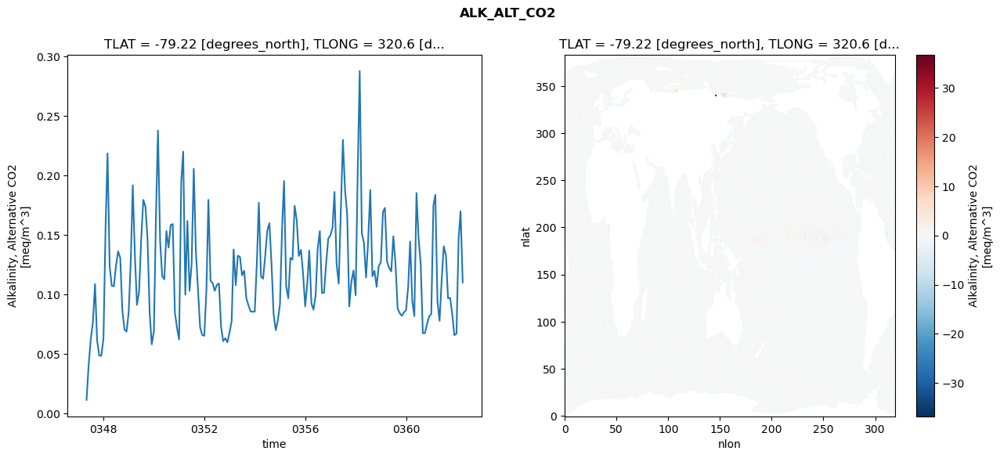
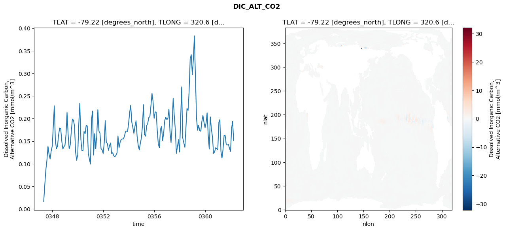
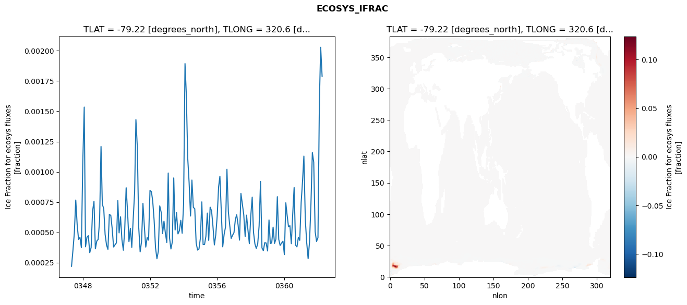
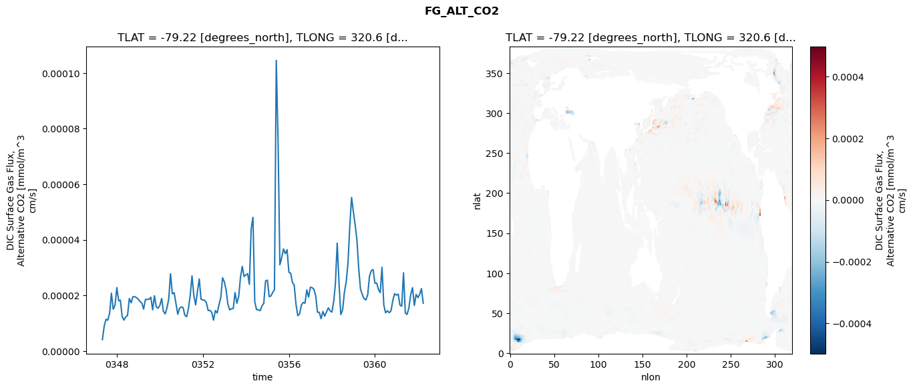

glb-dor_North_Atlantic_basin_040_1999-04-01_00161#
Simulation details#
Case: smyle.cdr-atlas-v0.glb-dor_North_Atlantic_basin_040_1999-04-01_00161.001
Basin: North_Atlantic_basin
Polygon: 40.0
Start date: 1999-04
Show code cell source Hide code cell source
import xarray as xr
import matplotlib.pyplot as plt
Show code cell source Hide code cell source
zarr_store = "/path/to/zarr/store"
# Parameters
zarr_store = "/global/cfs/projectdirs/m4746/Projects/Ocean-CDR-Atlas-v0/data/validation/smyle.cdr-atlas-v0.glb-dor_North_Atlantic_basin_040_1999-04-01_00161.001.validation.zarr"
Show code cell source Hide code cell source
%%time
ds_o = xr.open_zarr(zarr_store).compute()
ds_o
CPU times: user 594 ms, sys: 430 ms, total: 1.02 s
Wall time: 1.26 s
<xarray.Dataset> Size: 2MB
Dimensions: (nlat: 384, nlon: 320, time: 180)
Coordinates:
TLAT float64 8B -79.22
TLONG float64 8B 320.6
ULAT float64 8B -78.95
ULONG float64 8B 321.1
* time (time) object 1kB 0347-05-01 00:00:00 ... 0362-04-01 0...
z_t float32 4B 500.0
Dimensions without coordinates: nlat, nlon
Data variables:
ALK_ALT_CO2_diff (nlat, nlon) float32 492kB nan nan nan ... nan nan nan
ALK_ALT_CO2_rmse (time) float64 1kB 0.01154 0.04093 0.0623 ... 0.17 0.1102
DIC_ALT_CO2_diff (nlat, nlon) float32 492kB nan nan nan ... nan nan nan
DIC_ALT_CO2_rmse (time) float64 1kB 0.01616 0.05305 ... 0.1942 0.1517
ECOSYS_IFRAC_diff (nlat, nlon) float32 492kB nan nan nan ... nan nan nan
ECOSYS_IFRAC_rmse (time) float64 1kB 0.0002193 0.0003523 ... 0.001789
FG_ALT_CO2_diff (nlat, nlon) float32 492kB nan nan nan ... nan nan nan
FG_ALT_CO2_rmse (time) float64 1kB 4.102e-06 8.988e-06 ... 1.719e-05xarray.Dataset
- nlat: 384
- nlon: 320
- time: 180
- TLAT()float64-79.22
- long_name :
- array of t-grid latitudes
- units :
- degrees_north
array(-79.22052261)
- TLONG()float64320.6
- long_name :
- array of t-grid longitudes
- units :
- degrees_east
array(320.56250892)
- ULAT()float64-78.95
- long_name :
- array of u-grid latitudes
- units :
- degrees_north
array(-78.95289509)
- ULONG()float64321.1
- long_name :
- array of u-grid longitudes
- units :
- degrees_east
array(321.12500894)
- time(time)object0347-05-01 00:00:00 ... 0362-04-...
- bounds :
- time_bound
- long_name :
- time
array([cftime.DatetimeNoLeap(347, 5, 1, 0, 0, 0, 0, has_year_zero=True), cftime.DatetimeNoLeap(347, 6, 1, 0, 0, 0, 0, has_year_zero=True), cftime.DatetimeNoLeap(347, 7, 1, 0, 0, 0, 0, has_year_zero=True), cftime.DatetimeNoLeap(347, 8, 1, 0, 0, 0, 0, has_year_zero=True), cftime.DatetimeNoLeap(347, 9, 1, 0, 0, 0, 0, has_year_zero=True), cftime.DatetimeNoLeap(347, 10, 1, 0, 0, 0, 0, has_year_zero=True), cftime.DatetimeNoLeap(347, 11, 1, 0, 0, 0, 0, has_year_zero=True), cftime.DatetimeNoLeap(347, 12, 1, 0, 0, 0, 0, has_year_zero=True), cftime.DatetimeNoLeap(348, 1, 1, 0, 0, 0, 0, has_year_zero=True), cftime.DatetimeNoLeap(348, 2, 1, 0, 0, 0, 0, has_year_zero=True), cftime.DatetimeNoLeap(348, 3, 1, 0, 0, 0, 0, has_year_zero=True), cftime.DatetimeNoLeap(348, 4, 1, 0, 0, 0, 0, has_year_zero=True), cftime.DatetimeNoLeap(348, 5, 1, 0, 0, 0, 0, has_year_zero=True), cftime.DatetimeNoLeap(348, 6, 1, 0, 0, 0, 0, has_year_zero=True), cftime.DatetimeNoLeap(348, 7, 1, 0, 0, 0, 0, has_year_zero=True), cftime.DatetimeNoLeap(348, 8, 1, 0, 0, 0, 0, has_year_zero=True), cftime.DatetimeNoLeap(348, 9, 1, 0, 0, 0, 0, has_year_zero=True), cftime.DatetimeNoLeap(348, 10, 1, 0, 0, 0, 0, has_year_zero=True), cftime.DatetimeNoLeap(348, 11, 1, 0, 0, 0, 0, has_year_zero=True), cftime.DatetimeNoLeap(348, 12, 1, 0, 0, 0, 0, has_year_zero=True), cftime.DatetimeNoLeap(349, 1, 1, 0, 0, 0, 0, has_year_zero=True), cftime.DatetimeNoLeap(349, 2, 1, 0, 0, 0, 0, has_year_zero=True), cftime.DatetimeNoLeap(349, 3, 1, 0, 0, 0, 0, has_year_zero=True), cftime.DatetimeNoLeap(349, 4, 1, 0, 0, 0, 0, has_year_zero=True), cftime.DatetimeNoLeap(349, 5, 1, 0, 0, 0, 0, has_year_zero=True), cftime.DatetimeNoLeap(349, 6, 1, 0, 0, 0, 0, has_year_zero=True), cftime.DatetimeNoLeap(349, 7, 1, 0, 0, 0, 0, has_year_zero=True), cftime.DatetimeNoLeap(349, 8, 1, 0, 0, 0, 0, has_year_zero=True), cftime.DatetimeNoLeap(349, 9, 1, 0, 0, 0, 0, has_year_zero=True), cftime.DatetimeNoLeap(349, 10, 1, 0, 0, 0, 0, has_year_zero=True), cftime.DatetimeNoLeap(349, 11, 1, 0, 0, 0, 0, has_year_zero=True), cftime.DatetimeNoLeap(349, 12, 1, 0, 0, 0, 0, has_year_zero=True), cftime.DatetimeNoLeap(350, 1, 1, 0, 0, 0, 0, has_year_zero=True), cftime.DatetimeNoLeap(350, 2, 1, 0, 0, 0, 0, has_year_zero=True), cftime.DatetimeNoLeap(350, 3, 1, 0, 0, 0, 0, has_year_zero=True), cftime.DatetimeNoLeap(350, 4, 1, 0, 0, 0, 0, has_year_zero=True), cftime.DatetimeNoLeap(350, 5, 1, 0, 0, 0, 0, has_year_zero=True), cftime.DatetimeNoLeap(350, 6, 1, 0, 0, 0, 0, has_year_zero=True), cftime.DatetimeNoLeap(350, 7, 1, 0, 0, 0, 0, has_year_zero=True), cftime.DatetimeNoLeap(350, 8, 1, 0, 0, 0, 0, has_year_zero=True), cftime.DatetimeNoLeap(350, 9, 1, 0, 0, 0, 0, has_year_zero=True), cftime.DatetimeNoLeap(350, 10, 1, 0, 0, 0, 0, has_year_zero=True), cftime.DatetimeNoLeap(350, 11, 1, 0, 0, 0, 0, has_year_zero=True), cftime.DatetimeNoLeap(350, 12, 1, 0, 0, 0, 0, has_year_zero=True), cftime.DatetimeNoLeap(351, 1, 1, 0, 0, 0, 0, has_year_zero=True), cftime.DatetimeNoLeap(351, 2, 1, 0, 0, 0, 0, has_year_zero=True), cftime.DatetimeNoLeap(351, 3, 1, 0, 0, 0, 0, has_year_zero=True), cftime.DatetimeNoLeap(351, 4, 1, 0, 0, 0, 0, has_year_zero=True), cftime.DatetimeNoLeap(351, 5, 1, 0, 0, 0, 0, has_year_zero=True), cftime.DatetimeNoLeap(351, 6, 1, 0, 0, 0, 0, has_year_zero=True), cftime.DatetimeNoLeap(351, 7, 1, 0, 0, 0, 0, has_year_zero=True), cftime.DatetimeNoLeap(351, 8, 1, 0, 0, 0, 0, has_year_zero=True), cftime.DatetimeNoLeap(351, 9, 1, 0, 0, 0, 0, has_year_zero=True), cftime.DatetimeNoLeap(351, 10, 1, 0, 0, 0, 0, has_year_zero=True), cftime.DatetimeNoLeap(351, 11, 1, 0, 0, 0, 0, has_year_zero=True), cftime.DatetimeNoLeap(351, 12, 1, 0, 0, 0, 0, has_year_zero=True), cftime.DatetimeNoLeap(352, 1, 1, 0, 0, 0, 0, has_year_zero=True), cftime.DatetimeNoLeap(352, 2, 1, 0, 0, 0, 0, has_year_zero=True), cftime.DatetimeNoLeap(352, 3, 1, 0, 0, 0, 0, has_year_zero=True), cftime.DatetimeNoLeap(352, 4, 1, 0, 0, 0, 0, has_year_zero=True), cftime.DatetimeNoLeap(352, 5, 1, 0, 0, 0, 0, has_year_zero=True), cftime.DatetimeNoLeap(352, 6, 1, 0, 0, 0, 0, has_year_zero=True), cftime.DatetimeNoLeap(352, 7, 1, 0, 0, 0, 0, has_year_zero=True), cftime.DatetimeNoLeap(352, 8, 1, 0, 0, 0, 0, has_year_zero=True), cftime.DatetimeNoLeap(352, 9, 1, 0, 0, 0, 0, has_year_zero=True), cftime.DatetimeNoLeap(352, 10, 1, 0, 0, 0, 0, has_year_zero=True), cftime.DatetimeNoLeap(352, 11, 1, 0, 0, 0, 0, has_year_zero=True), cftime.DatetimeNoLeap(352, 12, 1, 0, 0, 0, 0, has_year_zero=True), cftime.DatetimeNoLeap(353, 1, 1, 0, 0, 0, 0, has_year_zero=True), cftime.DatetimeNoLeap(353, 2, 1, 0, 0, 0, 0, has_year_zero=True), cftime.DatetimeNoLeap(353, 3, 1, 0, 0, 0, 0, has_year_zero=True), cftime.DatetimeNoLeap(353, 4, 1, 0, 0, 0, 0, has_year_zero=True), cftime.DatetimeNoLeap(353, 5, 1, 0, 0, 0, 0, has_year_zero=True), cftime.DatetimeNoLeap(353, 6, 1, 0, 0, 0, 0, has_year_zero=True), cftime.DatetimeNoLeap(353, 7, 1, 0, 0, 0, 0, has_year_zero=True), cftime.DatetimeNoLeap(353, 8, 1, 0, 0, 0, 0, has_year_zero=True), cftime.DatetimeNoLeap(353, 9, 1, 0, 0, 0, 0, has_year_zero=True), cftime.DatetimeNoLeap(353, 10, 1, 0, 0, 0, 0, has_year_zero=True), cftime.DatetimeNoLeap(353, 11, 1, 0, 0, 0, 0, has_year_zero=True), cftime.DatetimeNoLeap(353, 12, 1, 0, 0, 0, 0, has_year_zero=True), cftime.DatetimeNoLeap(354, 1, 1, 0, 0, 0, 0, has_year_zero=True), cftime.DatetimeNoLeap(354, 2, 1, 0, 0, 0, 0, has_year_zero=True), cftime.DatetimeNoLeap(354, 3, 1, 0, 0, 0, 0, has_year_zero=True), cftime.DatetimeNoLeap(354, 4, 1, 0, 0, 0, 0, has_year_zero=True), cftime.DatetimeNoLeap(354, 5, 1, 0, 0, 0, 0, has_year_zero=True), cftime.DatetimeNoLeap(354, 6, 1, 0, 0, 0, 0, has_year_zero=True), cftime.DatetimeNoLeap(354, 7, 1, 0, 0, 0, 0, has_year_zero=True), cftime.DatetimeNoLeap(354, 8, 1, 0, 0, 0, 0, has_year_zero=True), cftime.DatetimeNoLeap(354, 9, 1, 0, 0, 0, 0, has_year_zero=True), cftime.DatetimeNoLeap(354, 10, 1, 0, 0, 0, 0, has_year_zero=True), cftime.DatetimeNoLeap(354, 11, 1, 0, 0, 0, 0, has_year_zero=True), cftime.DatetimeNoLeap(354, 12, 1, 0, 0, 0, 0, has_year_zero=True), cftime.DatetimeNoLeap(355, 1, 1, 0, 0, 0, 0, has_year_zero=True), cftime.DatetimeNoLeap(355, 2, 1, 0, 0, 0, 0, has_year_zero=True), cftime.DatetimeNoLeap(355, 3, 1, 0, 0, 0, 0, has_year_zero=True), cftime.DatetimeNoLeap(355, 4, 1, 0, 0, 0, 0, has_year_zero=True), cftime.DatetimeNoLeap(355, 5, 1, 0, 0, 0, 0, has_year_zero=True), cftime.DatetimeNoLeap(355, 6, 1, 0, 0, 0, 0, has_year_zero=True), cftime.DatetimeNoLeap(355, 7, 1, 0, 0, 0, 0, has_year_zero=True), cftime.DatetimeNoLeap(355, 8, 1, 0, 0, 0, 0, has_year_zero=True), cftime.DatetimeNoLeap(355, 9, 1, 0, 0, 0, 0, has_year_zero=True), cftime.DatetimeNoLeap(355, 10, 1, 0, 0, 0, 0, has_year_zero=True), cftime.DatetimeNoLeap(355, 11, 1, 0, 0, 0, 0, has_year_zero=True), cftime.DatetimeNoLeap(355, 12, 1, 0, 0, 0, 0, has_year_zero=True), cftime.DatetimeNoLeap(356, 1, 1, 0, 0, 0, 0, has_year_zero=True), cftime.DatetimeNoLeap(356, 2, 1, 0, 0, 0, 0, has_year_zero=True), cftime.DatetimeNoLeap(356, 3, 1, 0, 0, 0, 0, has_year_zero=True), cftime.DatetimeNoLeap(356, 4, 1, 0, 0, 0, 0, has_year_zero=True), cftime.DatetimeNoLeap(356, 5, 1, 0, 0, 0, 0, has_year_zero=True), cftime.DatetimeNoLeap(356, 6, 1, 0, 0, 0, 0, has_year_zero=True), cftime.DatetimeNoLeap(356, 7, 1, 0, 0, 0, 0, has_year_zero=True), cftime.DatetimeNoLeap(356, 8, 1, 0, 0, 0, 0, has_year_zero=True), cftime.DatetimeNoLeap(356, 9, 1, 0, 0, 0, 0, has_year_zero=True), cftime.DatetimeNoLeap(356, 10, 1, 0, 0, 0, 0, has_year_zero=True), cftime.DatetimeNoLeap(356, 11, 1, 0, 0, 0, 0, has_year_zero=True), cftime.DatetimeNoLeap(356, 12, 1, 0, 0, 0, 0, has_year_zero=True), cftime.DatetimeNoLeap(357, 1, 1, 0, 0, 0, 0, has_year_zero=True), cftime.DatetimeNoLeap(357, 2, 1, 0, 0, 0, 0, has_year_zero=True), cftime.DatetimeNoLeap(357, 3, 1, 0, 0, 0, 0, has_year_zero=True), cftime.DatetimeNoLeap(357, 4, 1, 0, 0, 0, 0, has_year_zero=True), cftime.DatetimeNoLeap(357, 5, 1, 0, 0, 0, 0, has_year_zero=True), cftime.DatetimeNoLeap(357, 6, 1, 0, 0, 0, 0, has_year_zero=True), cftime.DatetimeNoLeap(357, 7, 1, 0, 0, 0, 0, has_year_zero=True), cftime.DatetimeNoLeap(357, 8, 1, 0, 0, 0, 0, has_year_zero=True), cftime.DatetimeNoLeap(357, 9, 1, 0, 0, 0, 0, has_year_zero=True), cftime.DatetimeNoLeap(357, 10, 1, 0, 0, 0, 0, has_year_zero=True), cftime.DatetimeNoLeap(357, 11, 1, 0, 0, 0, 0, has_year_zero=True), cftime.DatetimeNoLeap(357, 12, 1, 0, 0, 0, 0, has_year_zero=True), cftime.DatetimeNoLeap(358, 1, 1, 0, 0, 0, 0, has_year_zero=True), cftime.DatetimeNoLeap(358, 2, 1, 0, 0, 0, 0, has_year_zero=True), cftime.DatetimeNoLeap(358, 3, 1, 0, 0, 0, 0, has_year_zero=True), cftime.DatetimeNoLeap(358, 4, 1, 0, 0, 0, 0, has_year_zero=True), cftime.DatetimeNoLeap(358, 5, 1, 0, 0, 0, 0, has_year_zero=True), cftime.DatetimeNoLeap(358, 6, 1, 0, 0, 0, 0, has_year_zero=True), cftime.DatetimeNoLeap(358, 7, 1, 0, 0, 0, 0, has_year_zero=True), cftime.DatetimeNoLeap(358, 8, 1, 0, 0, 0, 0, has_year_zero=True), cftime.DatetimeNoLeap(358, 9, 1, 0, 0, 0, 0, has_year_zero=True), cftime.DatetimeNoLeap(358, 10, 1, 0, 0, 0, 0, has_year_zero=True), cftime.DatetimeNoLeap(358, 11, 1, 0, 0, 0, 0, has_year_zero=True), cftime.DatetimeNoLeap(358, 12, 1, 0, 0, 0, 0, has_year_zero=True), cftime.DatetimeNoLeap(359, 1, 1, 0, 0, 0, 0, has_year_zero=True), cftime.DatetimeNoLeap(359, 2, 1, 0, 0, 0, 0, has_year_zero=True), cftime.DatetimeNoLeap(359, 3, 1, 0, 0, 0, 0, has_year_zero=True), cftime.DatetimeNoLeap(359, 4, 1, 0, 0, 0, 0, has_year_zero=True), cftime.DatetimeNoLeap(359, 5, 1, 0, 0, 0, 0, has_year_zero=True), cftime.DatetimeNoLeap(359, 6, 1, 0, 0, 0, 0, has_year_zero=True), cftime.DatetimeNoLeap(359, 7, 1, 0, 0, 0, 0, has_year_zero=True), cftime.DatetimeNoLeap(359, 8, 1, 0, 0, 0, 0, has_year_zero=True), cftime.DatetimeNoLeap(359, 9, 1, 0, 0, 0, 0, has_year_zero=True), cftime.DatetimeNoLeap(359, 10, 1, 0, 0, 0, 0, has_year_zero=True), cftime.DatetimeNoLeap(359, 11, 1, 0, 0, 0, 0, has_year_zero=True), cftime.DatetimeNoLeap(359, 12, 1, 0, 0, 0, 0, has_year_zero=True), cftime.DatetimeNoLeap(360, 1, 1, 0, 0, 0, 0, has_year_zero=True), cftime.DatetimeNoLeap(360, 2, 1, 0, 0, 0, 0, has_year_zero=True), cftime.DatetimeNoLeap(360, 3, 1, 0, 0, 0, 0, has_year_zero=True), cftime.DatetimeNoLeap(360, 4, 1, 0, 0, 0, 0, has_year_zero=True), cftime.DatetimeNoLeap(360, 5, 1, 0, 0, 0, 0, has_year_zero=True), cftime.DatetimeNoLeap(360, 6, 1, 0, 0, 0, 0, has_year_zero=True), cftime.DatetimeNoLeap(360, 7, 1, 0, 0, 0, 0, has_year_zero=True), cftime.DatetimeNoLeap(360, 8, 1, 0, 0, 0, 0, has_year_zero=True), cftime.DatetimeNoLeap(360, 9, 1, 0, 0, 0, 0, has_year_zero=True), cftime.DatetimeNoLeap(360, 10, 1, 0, 0, 0, 0, has_year_zero=True), cftime.DatetimeNoLeap(360, 11, 1, 0, 0, 0, 0, has_year_zero=True), cftime.DatetimeNoLeap(360, 12, 1, 0, 0, 0, 0, has_year_zero=True), cftime.DatetimeNoLeap(361, 1, 1, 0, 0, 0, 0, has_year_zero=True), cftime.DatetimeNoLeap(361, 2, 1, 0, 0, 0, 0, has_year_zero=True), cftime.DatetimeNoLeap(361, 3, 1, 0, 0, 0, 0, has_year_zero=True), cftime.DatetimeNoLeap(361, 4, 1, 0, 0, 0, 0, has_year_zero=True), cftime.DatetimeNoLeap(361, 5, 1, 0, 0, 0, 0, has_year_zero=True), cftime.DatetimeNoLeap(361, 6, 1, 0, 0, 0, 0, has_year_zero=True), cftime.DatetimeNoLeap(361, 7, 1, 0, 0, 0, 0, has_year_zero=True), cftime.DatetimeNoLeap(361, 8, 1, 0, 0, 0, 0, has_year_zero=True), cftime.DatetimeNoLeap(361, 9, 1, 0, 0, 0, 0, has_year_zero=True), cftime.DatetimeNoLeap(361, 10, 1, 0, 0, 0, 0, has_year_zero=True), cftime.DatetimeNoLeap(361, 11, 1, 0, 0, 0, 0, has_year_zero=True), cftime.DatetimeNoLeap(361, 12, 1, 0, 0, 0, 0, has_year_zero=True), cftime.DatetimeNoLeap(362, 1, 1, 0, 0, 0, 0, has_year_zero=True), cftime.DatetimeNoLeap(362, 2, 1, 0, 0, 0, 0, has_year_zero=True), cftime.DatetimeNoLeap(362, 3, 1, 0, 0, 0, 0, has_year_zero=True), cftime.DatetimeNoLeap(362, 4, 1, 0, 0, 0, 0, has_year_zero=True)], dtype=object) - z_t()float32500.0
- long_name :
- depth from surface to midpoint of layer
- positive :
- down
- units :
- centimeters
- valid_max :
- 537500.0
- valid_min :
- 500.0
array(500., dtype=float32)
- ALK_ALT_CO2_diff(nlat, nlon)float32nan nan nan nan ... nan nan nan nan
- cell_methods :
- time: mean
- grid_loc :
- 3111
- long_name :
- Alkalinity, Alternative CO2
- units :
- meq/m^3
array([[ nan, nan, nan, ..., nan, nan, nan], [ nan, nan, nan, ..., nan, nan, nan], [0.01367188, 0.00439453, 0.01586914, ..., nan, nan, nan], ..., [ nan, nan, nan, ..., nan, nan, nan], [ nan, nan, nan, ..., nan, nan, nan], [ nan, nan, nan, ..., nan, nan, nan]], dtype=float32) - ALK_ALT_CO2_rmse(time)float640.01154 0.04093 ... 0.17 0.1102
- cell_methods :
- time: mean
- grid_loc :
- 3111
- long_name :
- Alkalinity, Alternative CO2
- units :
- meq/m^3
array([0.01154099, 0.04092919, 0.06230446, 0.0766206 , 0.10879485, 0.06139065, 0.04874585, 0.04859488, 0.06323201, 0.15777226, 0.21860542, 0.12392361, 0.10740375, 0.1069365 , 0.12392633, 0.13628183, 0.13083991, 0.08713298, 0.07069006, 0.06891272, 0.08500011, 0.12922055, 0.19178244, 0.13292215, 0.09129398, 0.10272384, 0.14642935, 0.17958546, 0.17385178, 0.14655631, 0.08438438, 0.05819999, 0.06917111, 0.16893503, 0.23777095, 0.14498091, 0.1156032 , 0.11277143, 0.15333031, 0.13945609, 0.15845375, 0.15921616, 0.08494503, 0.0722616 , 0.06232853, 0.19499465, 0.22010573, 0.09988776, 0.1618591 , 0.10313962, 0.12543981, 0.20576353, 0.13603537, 0.10412538, 0.07242673, 0.06609246, 0.06539162, 0.10483196, 0.17955998, 0.11153461, 0.10967857, 0.10320249, 0.10808609, 0.10929624, 0.07270962, 0.06084671, 0.0633366 , 0.05994508, 0.06803957, 0.07792941, 0.13793393, 0.10788508, 0.13268055, 0.13166822, 0.11616123, 0.1200021 , 0.0970259 , 0.09112647, 0.08587236, 0.08557835, 0.0856643 , 0.12784378, 0.17718755, 0.11533065, 0.11332756, 0.13213885, 0.15354883, 0.15996532, 0.12534415, 0.08340297, 0.07007488, 0.07829697, 0.09194513, 0.15648726, 0.19547231, 0.10686373, 0.09686442, 0.13071839, 0.12946467, 0.17464137, 0.16240859, 0.13242151, 0.13756409, 0.11806647, 0.09005199, 0.10991773, 0.1369533 , 0.09274768, 0.08731022, 0.09915862, 0.13873197, 0.15337985, 0.10120199, 0.10167194, 0.12660871, 0.14709021, 0.14980392, 0.1562824 , 0.18627683, 0.12554188, 0.10922382, 0.16969455, 0.22999398, 0.18760218, 0.16719241, 0.09002205, 0.11091053, 0.12019314, 0.09945725, 0.20535301, 0.28782355, 0.15139335, 0.14387627, 0.11428019, 0.1444212 , 0.18785768, 0.11532398, 0.11990778, 0.10644513, 0.1236684 , 0.12734325, 0.16947934, 0.17282365, 0.12773443, 0.12251684, 0.11947726, 0.1489488 , 0.12608632, 0.08837511, 0.08438667, 0.08213559, 0.08500915, 0.08683805, 0.10672218, 0.14454312, 0.09455552, 0.08195909, 0.18537785, 0.14770955, 0.12588655, 0.06765623, 0.06760706, 0.07523727, 0.08153702, 0.08373357, 0.17486643, 0.18379633, 0.09414501, 0.07793124, 0.11264261, 0.14054551, 0.13302556, 0.09683864, 0.09719509, 0.08329291, 0.06589294, 0.06720632, 0.14707366, 0.16995734, 0.11021388]) - DIC_ALT_CO2_diff(nlat, nlon)float32nan nan nan nan ... nan nan nan nan
- cell_methods :
- time: mean
- grid_loc :
- 3111
- long_name :
- Dissolved Inorganic Carbon, Alternative CO2
- units :
- mmol/m^3
array([[ nan, nan, nan, ..., nan, nan, nan], [ nan, nan, nan, ..., nan, nan, nan], [-0.04663086, -0.04760742, -0.01586914, ..., nan, nan, nan], ..., [ nan, nan, nan, ..., nan, nan, nan], [ nan, nan, nan, ..., nan, nan, nan], [ nan, nan, nan, ..., nan, nan, nan]], dtype=float32) - DIC_ALT_CO2_rmse(time)float640.01616 0.05305 ... 0.1942 0.1517
- cell_methods :
- time: mean
- grid_loc :
- 3111
- long_name :
- Dissolved Inorganic Carbon, Alternative CO2
- units :
- mmol/m^3
array([0.01616017, 0.05305035, 0.08601957, 0.10777478, 0.13830384, 0.1213374 , 0.11054789, 0.12796761, 0.13908496, 0.18490888, 0.22822997, 0.15076322, 0.13349136, 0.1387669 , 0.16328739, 0.17892408, 0.17758936, 0.15025696, 0.13277207, 0.13764383, 0.14102442, 0.16609597, 0.21356704, 0.16516542, 0.13279445, 0.142176 , 0.17173272, 0.19892754, 0.19662832, 0.1838284 , 0.12583311, 0.10777087, 0.11953664, 0.18911242, 0.23396671, 0.15467148, 0.12954203, 0.12922983, 0.17156305, 0.16642106, 0.18473691, 0.18382264, 0.12300765, 0.1104388 , 0.09938674, 0.19757896, 0.21671889, 0.11934004, 0.16658817, 0.1329516 , 0.16223568, 0.21952458, 0.17235245, 0.16800113, 0.13336218, 0.13084071, 0.12290349, 0.14742373, 0.19553593, 0.14706547, 0.14478413, 0.12965559, 0.1401872 , 0.14604429, 0.12238152, 0.1244313 , 0.11761226, 0.11543315, 0.11873645, 0.12398716, 0.16170118, 0.13532422, 0.14741476, 0.15391013, 0.15499533, 0.15495193, 0.16038286, 0.17097067, 0.17251955, 0.17152425, 0.19047983, 0.21489467, 0.22937777, 0.19207036, 0.18022128, 0.16715648, 0.18298791, 0.19518147, 0.16045555, 0.14115982, 0.13081491, 0.14497844, 0.15709264, 0.18441533, 0.23079169, 0.16488923, 0.16112165, 0.18448596, 0.18908285, 0.20235683, 0.20414475, 0.22811558, 0.25566051, 0.23828275, 0.20050754, 0.21495977, 0.21373709, 0.17353868, 0.14351857, 0.1357057 , 0.17620089, 0.18234174, 0.15107903, 0.16781789, 0.19584289, 0.2028422 , 0.19771824, 0.20092437, 0.22073497, 0.17013529, 0.14694437, 0.18301064, 0.24516425, 0.20704054, 0.17471087, 0.12333061, 0.13824823, 0.15315719, 0.12612442, 0.2031819 , 0.27011118, 0.1572675 , 0.14673187, 0.13657182, 0.17963254, 0.22259007, 0.21804771, 0.26040692, 0.33248931, 0.34145799, 0.29718336, 0.33286516, 0.38323048, 0.29007733, 0.20073907, 0.17434534, 0.18493246, 0.17348102, 0.1721286 , 0.19356338, 0.20686589, 0.19189714, 0.17981067, 0.19107171, 0.21270989, 0.16379016, 0.13263183, 0.20361713, 0.17711527, 0.15943374, 0.12300063, 0.12615571, 0.13555394, 0.13338711, 0.13094574, 0.19205737, 0.19763952, 0.12771526, 0.11261165, 0.1327928 , 0.1632022 , 0.16232322, 0.1419205 , 0.14148444, 0.14298602, 0.13459232, 0.12749715, 0.1780704 , 0.19421816, 0.1516849 ]) - ECOSYS_IFRAC_diff(nlat, nlon)float32nan nan nan nan ... nan nan nan nan
- cell_methods :
- time: mean
- grid_loc :
- 2110
- long_name :
- Ice Fraction for ecosys fluxes
- units :
- fraction
array([[ nan, nan, nan, ..., nan, nan, nan], [ nan, nan, nan, ..., nan, nan, nan], [-0.00026536, -0.00149179, -0.00372088, ..., nan, nan, nan], ..., [ nan, nan, nan, ..., nan, nan, nan], [ nan, nan, nan, ..., nan, nan, nan], [ nan, nan, nan, ..., nan, nan, nan]], dtype=float32) - ECOSYS_IFRAC_rmse(time)float640.0002193 0.0003523 ... 0.001789
- cell_methods :
- time: mean
- grid_loc :
- 2110
- long_name :
- Ice Fraction for ecosys fluxes
- units :
- fraction
array([0.00021926, 0.00035231, 0.00049432, 0.00076661, 0.00055995, 0.00044107, 0.00045748, 0.00037347, 0.00108251, 0.00153483, 0.00038014, 0.00045994, 0.00047199, 0.0003319 , 0.00037416, 0.00067482, 0.00075568, 0.00036364, 0.00042788, 0.0004414 , 0.00059922, 0.00120937, 0.00073242, 0.0006953 , 0.00048216, 0.00039388, 0.00035883, 0.00064782, 0.00063981, 0.00053268, 0.00037871, 0.00039619, 0.00041236, 0.0007616 , 0.00049526, 0.00062774, 0.0004401 , 0.00035208, 0.0005237 , 0.00086831, 0.00066615, 0.0004231 , 0.00053278, 0.00037517, 0.00060914, 0.00083131, 0.00143112, 0.00120202, 0.00054192, 0.00033801, 0.00042181, 0.00073891, 0.00054535, 0.00037787, 0.00045664, 0.00043533, 0.00084578, 0.00083557, 0.00075817, 0.00059819, 0.00037277, 0.00028153, 0.00034296, 0.0007184 , 0.00066551, 0.00048921, 0.00059186, 0.00049342, 0.00041565, 0.00098987, 0.00045588, 0.00036241, 0.00042061, 0.00094969, 0.00051869, 0.00066215, 0.00048687, 0.00051246, 0.00059909, 0.00049217, 0.00073049, 0.00189428, 0.00164203, 0.00111184, 0.00091179, 0.00063452, 0.00093181, 0.00070601, 0.00069467, 0.00041265, 0.00035332, 0.00036165, 0.00045119, 0.00075136, 0.0003994 , 0.00039913, 0.00046714, 0.00065892, 0.00043341, 0.00070805, 0.00067753, 0.00055049, 0.0003957 , 0.00047849, 0.00063303, 0.00087569, 0.00096258, 0.00066848, 0.00038006, 0.00048283, 0.00054389, 0.00102109, 0.00066828, 0.00055676, 0.00044904, 0.00047575, 0.00049707, 0.00060931, 0.00064465, 0.00055895, 0.00043541, 0.00082162, 0.00073491, 0.00064705, 0.00046523, 0.00064196, 0.00051677, 0.00040624, 0.00063536, 0.00079037, 0.00050064, 0.00040381, 0.00036642, 0.00040579, 0.00055252, 0.00092098, 0.00037111, 0.00034803, 0.00041486, 0.00041122, 0.0003458 , 0.00060209, 0.00040754, 0.00041168, 0.00054289, 0.00040791, 0.00044361, 0.00079452, 0.00044161, 0.00039141, 0.00041066, 0.00042728, 0.00031596, 0.00074358, 0.00064405, 0.00054578, 0.0005548 , 0.00040613, 0.00064588, 0.00087013, 0.00039369, 0.00037939, 0.00045769, 0.00043368, 0.00074756, 0.00093028, 0.00112979, 0.00060391, 0.00041678, 0.00028195, 0.00041699, 0.0007284 , 0.00115922, 0.00107863, 0.00050495, 0.00042456, 0.00045528, 0.00158418, 0.00202898, 0.0017889 ]) - FG_ALT_CO2_diff(nlat, nlon)float32nan nan nan nan ... nan nan nan nan
- cell_methods :
- time: mean
- grid_loc :
- 2110
- long_name :
- DIC Surface Gas Flux, Alternative CO2
- units :
- mmol/m^3 cm/s
array([[ nan, nan, nan, ..., nan, nan, nan], [ nan, nan, nan, ..., nan, nan, nan], [5.5869023e-06, 8.2237821e-06, 1.7430779e-05, ..., nan, nan, nan], ..., [ nan, nan, nan, ..., nan, nan, nan], [ nan, nan, nan, ..., nan, nan, nan], [ nan, nan, nan, ..., nan, nan, nan]], dtype=float32) - FG_ALT_CO2_rmse(time)float644.102e-06 8.988e-06 ... 1.719e-05
- cell_methods :
- time: mean
- grid_loc :
- 2110
- long_name :
- DIC Surface Gas Flux, Alternative CO2
- units :
- mmol/m^3 cm/s
array([4.10201575e-06, 8.98840096e-06, 1.14010884e-05, 1.10814579e-05, 1.37138559e-05, 2.07846162e-05, 1.50350228e-05, 1.64514586e-05, 2.28103973e-05, 1.80622150e-05, 1.83116018e-05, 1.24829779e-05, 1.11045248e-05, 1.22854235e-05, 1.27511144e-05, 1.89013512e-05, 1.73284969e-05, 1.95127729e-05, 1.95424040e-05, 1.91792911e-05, 1.86398529e-05, 1.76926241e-05, 1.72626032e-05, 1.50766807e-05, 1.85152341e-05, 1.85791314e-05, 1.85875915e-05, 1.93562064e-05, 1.48154262e-05, 1.98852444e-05, 1.58963525e-05, 1.53631103e-05, 1.64075996e-05, 1.88882272e-05, 1.43668263e-05, 1.33422401e-05, 1.54259142e-05, 1.87456490e-05, 2.77921481e-05, 2.05865597e-05, 2.09731500e-05, 1.71085233e-05, 1.32343212e-05, 1.53614088e-05, 1.58816209e-05, 1.55455863e-05, 1.28462537e-05, 1.23501353e-05, 1.52454316e-05, 2.01521368e-05, 2.70394937e-05, 1.98636877e-05, 1.65770286e-05, 2.14519323e-05, 2.59284420e-05, 1.85937726e-05, 1.83909889e-05, 1.82076264e-05, 1.73914374e-05, 1.45595208e-05, 1.46210436e-05, 1.38767780e-05, 1.10878892e-05, 1.45534612e-05, 1.36768485e-05, 1.65631157e-05, 1.92565955e-05, 2.63420834e-05, 2.48664078e-05, 2.18062015e-05, 1.68605095e-05, 1.47945552e-05, 1.52141719e-05, 1.53145690e-05, 2.10557067e-05, 1.71839796e-05, 1.95305709e-05, 2.64745015e-05, 3.04470293e-05, 2.68207613e-05, ... 3.35634059e-05, 3.67315723e-05, 3.50255952e-05, 3.64552131e-05, 2.83330735e-05, 2.79849103e-05, 2.47013357e-05, 2.37511024e-05, 1.68887483e-05, 1.27185393e-05, 1.33150804e-05, 1.65412274e-05, 1.74775469e-05, 1.71968656e-05, 2.19926065e-05, 1.94027268e-05, 2.29709303e-05, 2.27636015e-05, 2.22068742e-05, 1.98191712e-05, 1.39341564e-05, 1.39436149e-05, 1.16043360e-05, 1.42267503e-05, 1.25137292e-05, 1.40606143e-05, 1.55198325e-05, 1.44834980e-05, 1.40027671e-05, 1.78954153e-05, 2.40940641e-05, 3.88048596e-05, 2.47092892e-05, 1.31337991e-05, 1.46804890e-05, 2.11004044e-05, 2.49721512e-05, 3.16403771e-05, 4.51573681e-05, 5.52202219e-05, 5.00054085e-05, 4.51348377e-05, 4.01406011e-05, 2.97321631e-05, 2.22982074e-05, 2.02645230e-05, 1.88216787e-05, 1.83671887e-05, 2.03173176e-05, 2.69369795e-05, 2.89243218e-05, 2.92859419e-05, 2.43954251e-05, 2.44440659e-05, 2.21647116e-05, 2.10012399e-05, 3.01061054e-05, 1.65258695e-05, 1.37295580e-05, 1.45044981e-05, 1.37680754e-05, 1.44790564e-05, 1.82240214e-05, 2.06372179e-05, 2.01050486e-05, 2.04454316e-05, 1.65479388e-05, 1.61141033e-05, 2.81263925e-05, 1.36755909e-05, 1.31898145e-05, 1.55653912e-05, 2.03580604e-05, 2.27821762e-05, 1.64015694e-05, 2.03482249e-05, 1.92065231e-05, 2.04405246e-05, 2.24651358e-05, 1.71909769e-05])
- timePandasIndex
PandasIndex(CFTimeIndex([0347-05-01 00:00:00, 0347-06-01 00:00:00, 0347-07-01 00:00:00, 0347-08-01 00:00:00, 0347-09-01 00:00:00, 0347-10-01 00:00:00, 0347-11-01 00:00:00, 0347-12-01 00:00:00, 0348-01-01 00:00:00, 0348-02-01 00:00:00, ... 0361-07-01 00:00:00, 0361-08-01 00:00:00, 0361-09-01 00:00:00, 0361-10-01 00:00:00, 0361-11-01 00:00:00, 0361-12-01 00:00:00, 0362-01-01 00:00:00, 0362-02-01 00:00:00, 0362-03-01 00:00:00, 0362-04-01 00:00:00], dtype='object', length=180, calendar='noleap', freq='MS'))
Show code cell source Hide code cell source
variables = [v[:-5] for v in ds_o.variables if "_rmse" in v]
Show code cell source Hide code cell source
plt.rcParams.update({'figure.max_open_warning': 0})
for v in variables:
fig, axs = plt.subplots(1, 2, figsize=(15, 6))
ds_o[f"{v}_rmse"].plot(ax=axs[0])
ds_o[f"{v}_diff"].plot(ax=axs[1])
plt.suptitle(v, fontweight="bold")



